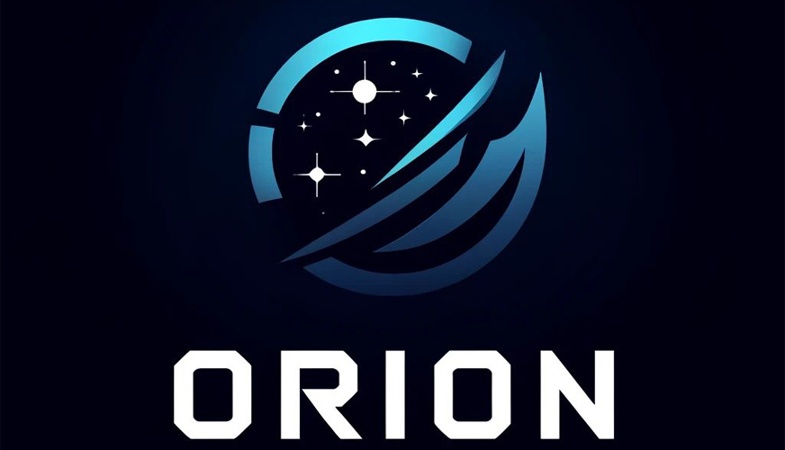

Nova plataforma de streaming de jogos chega para revolucionar o mercado
(25/11/2024)
Orion, uma plataforma nova, está chegando ao mercado de streaming de jogos

O mercado de streaming de jogos acaba de ganhar um novo e empolgante concorrente: Orion, uma plataforma inovadora que promete transformar a forma como você acessa e descobre seus jogos favoritos. Após meses de desenvolvimento e testes, o site de streaming Orion está oficialmente no ar, oferecendo uma experiência única tanto para jogadores casuais quanto para entusiastas.
Com uma interface intuitiva e um design de fácil navegação, o Orion facilita a descoberta de novos títulos e organiza sua biblioteca de jogos de maneira prática e acessível. A plataforma proporciona uma experiência de navegação tranquila, permitindo que você encontre jogos novos e explore seus favoritos sem complicação.
Emulação ao vivo na estreia: um show de lançamento imperdível!
Para celebrar a estreia, o Orion promete uma emulação ao vivo de um jogo clássico no dia 25 de novembro, às 19h00, no Auditório AudioSmart, localizado na UniFOA – Três Poços. Essa experiência de emulação é uma oportunidade única para os jogadores vivenciarem de perto as funcionalidades da plataforma, além de testar em tempo real a qualidade da sua experiência de jogo na nuvem. Não perca a chance de participar desse evento exclusivo e ver o Orion em ação!
O diferencial: conectando jogadores e facilitando a experiência
Inspirado pelas melhores práticas de plataformas como Netflix, o Orion coloca o foco na organização e descoberta de jogos, ao invés de simplesmente exibir uma lista extensa. A plataforma também se destaca por seu compromisso em criar um ambiente amigável e acessível, seja para quem está começando agora no mundo dos games ou para os veteranos que buscam algo novo.
O que esperar do Orion no futuro?
Com um lançamento de sucesso, o Orion já começa a planejar novas funcionalidades. Em breve, espera-se a adição de mais APIs de recomendação, autenticação de usuários e até mesmo a possibilidade de integrar jogos diretamente na nuvem, tornando a plataforma ainda mais dinâmica e envolvente.
O Orion já está disponível para todos os usuários. Não perca tempo e entre agora mesmo no www.orionstream.com para explorar os melhores jogos e ter uma nova experiência de descoberta. Prepare-se para redefinir sua maneira de jogar!